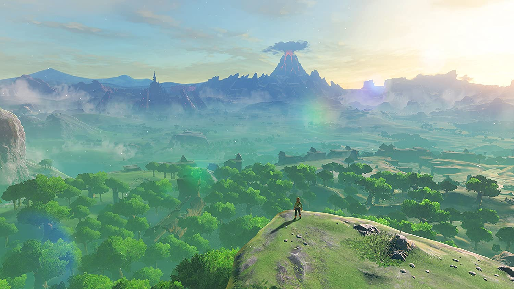
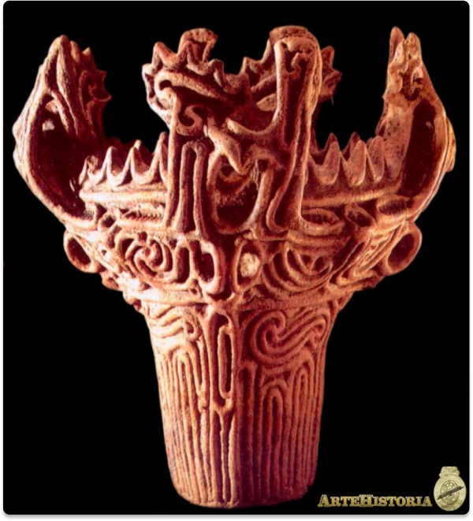

The Legend of Zelda: Breath of the wild
Datos interesantes / Curiosos de Zelda: breath of the wild
1- Los NPC’s se crearon usando una “versión evolucionada” del creador de Mii’s.
2- Los guardianes están inspirados en la cerámica del periodo Jōmon (14.500 a.C - 300 a. C en Japón).
- 3- El juego está completo de referencias de títulos anteriores.
- 4- Si se deja a Link quieto, y se espera lo suficiente, después de las animaciones habituales que presentan, se comenzará a quedar dormido, pero si se hace lo mismo cuando se tiene al personaje medio desnudo, comenzará a flexionar sus músculos.
- 5- Los NPC’s reaccionarán de formas diferentes y específicas según la acción que Link (el jugador) esté haciendo, la manera como esté vestido o la forma en la que se hable.
- 6- La pantalla de Game Over cambiará según la causa de la muerte
- 7- Durante la Luna Carmesí (periodo en el que aparecen muchos enemigos), si se cocina, las habilidades que entrega la comida, se potenciarán. El mapa de Breath of the Wild es casi el doble de grande que el de Skyrim.
- 8- Desde un inicio, está la posibilidad de ir y atacar a Ganon (jefe final), sin experiencia alguna.